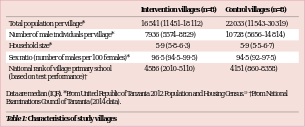

<?xml version="1.0" encoding="UTF-8"?>
<table title="table1" id="table1" class="tabcontent" xmlns="http://www.w3.org/1999/xhtml">
 <tr>
  <td>
   
   <p>corpus-oa-validation/10.1016_S0140-6736(16)32055-4/tables/table1/table.svg.png</p>
  </td>
  <td>
   <table class="table">
    <caption/>
    <tr>
     <th class="cell">Total population per village* Number of male individuals per village* Household size* Sex ratio (number of males per 100 females)* National rank of village primary school (based on test performance)† Data are median (IQR). *From United Republic of Tanzania 2012 Population and Housing Census. ^{19} Examinations Council of Tanzania (2014 data). </th>
     <th class="cell">16 541 (11 451–18 112) 7936 (5574–8829) 5·9 (5·8–6·3) 96·5 (94·5–99·5) 4586 (2010–5110) </th>
     <th class="cell">22 033 (11 543–30 319) 10 728 (5656–14 814) 5·9 (5·5–6·7) 94·5 (92–97·5) 4151 (860–8358) †From National </th>
    </tr>
    <tr>
     <td class="cell">Table 1: Characteristics of study villages</td>
    </tr>
   </table>
   <p>corpus-oa-validation/10.1016_S0140-6736(16)32055-4/tables/table1/table.svg.html</p>
  </td>
 </tr>
</table>
